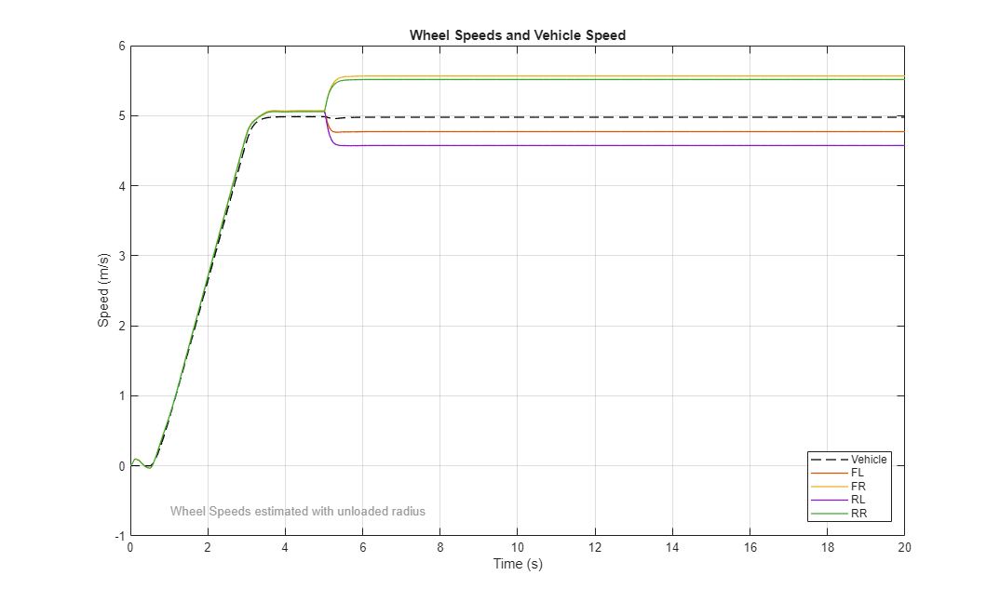
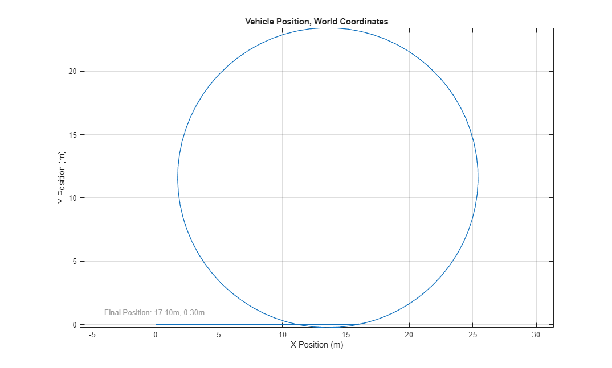
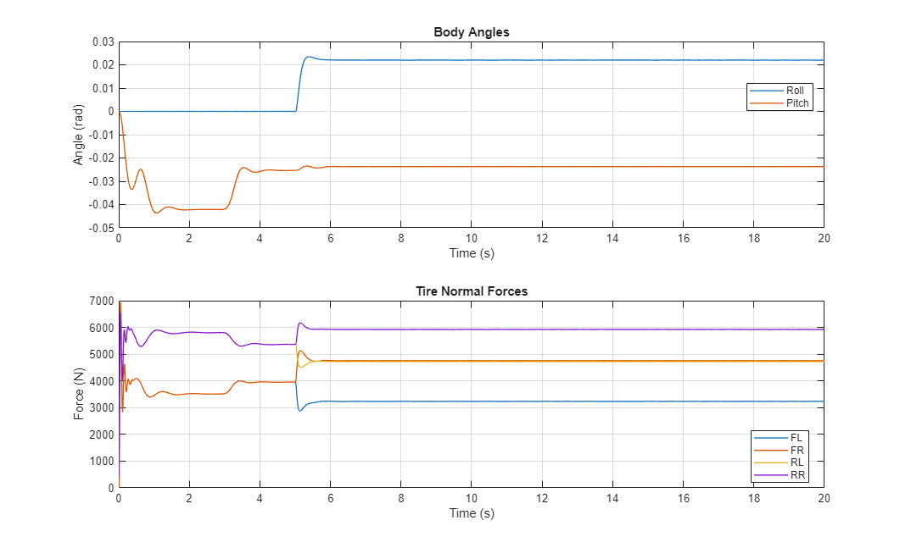
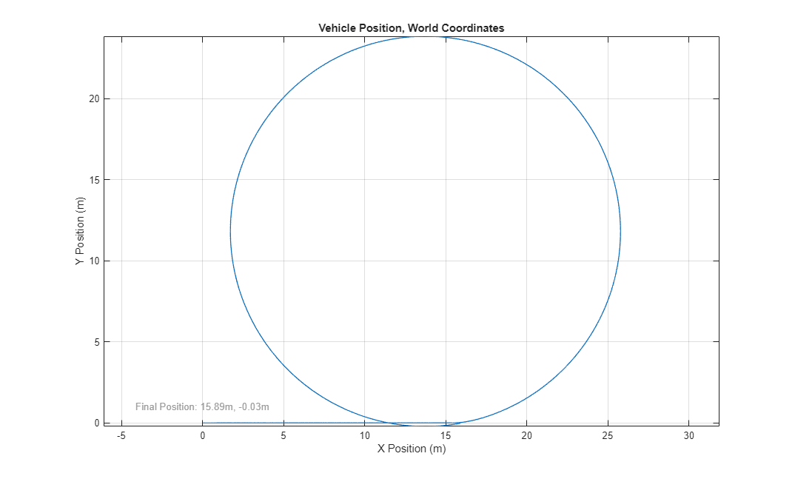
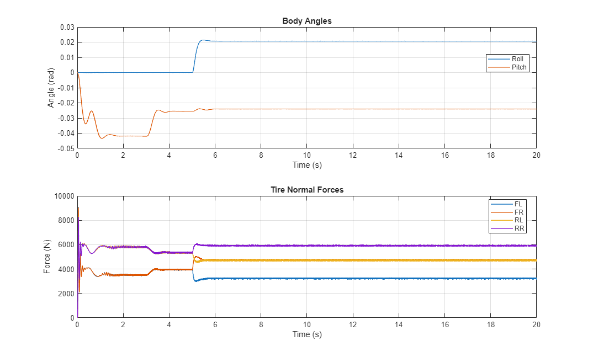
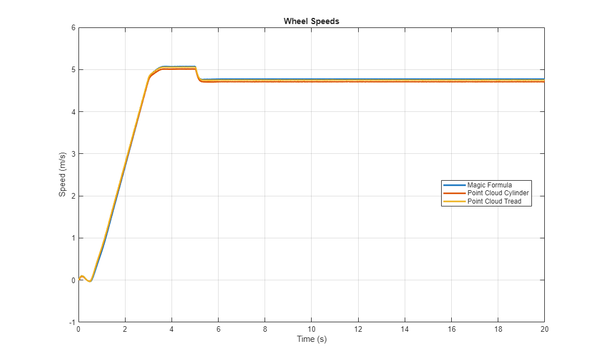

Tractor Contact with Ground
This example explores methods for modeling the contact between the tires and the ground for a row crop tractor.
For contact with uneven surfaces, point clouds and Magic Formula tire can be used. Point clouds enable multi-point contact and capturing the rugged profile of an offroad tire. The Magic Formula Tire model can detect contact between the tire center plane and any surface it touches. A weighted normal is calculated as the tire transitions between different segments of the surface. This is much less computation than a point cloud.
(return to Row Crop Tractor Overview)
Contents
- Model
- Tractor Model
- Tire Model: Magic Formula
- Tire Model: Point Cloud
- Simulation Results from Simscape Logging, Step Steer: Magic Formula
- Simulation Results from Simscape Logging, Step Steer: Point Cloud, Cylinder
- Simulation Results from Simscape Logging, Step Steer: Point Cloud, Tread
- Simulation Results from Simscape Logging, Step Steer: Comparison
Model

Tractor Model
The chassis, front and rear suspensions, and tires are modeled in this subsystem. The driveshafts connecting to each wheel are combined into a Simscape Bus which connects to a separate powertrain model. This allows us to combine this chassis model with any form of powertrain (two wheel drive, four wheel drive, and more).
The Scene is also contained in this subsystem. Flat and uneven terrain can be selected using variant subsystems. The scene connects to the wheel center for lookup table-defined terrain, and the tire connects to the surface.
Tire Model: Magic Formula
This subsystem models the tire. The tire is connected to the terrain which can be flat or uneven.
Tire Model: Point Cloud
This subsystem models the tire. The tire is connected to the terrain which can be flat or uneven. A point cloud models the geometry of the tire.
Simulation Results from Simscape Logging, Step Steer: Magic Formula
The plot below shows the wheel speeds during the maneuver. The rotational wheel speeds are scaled by the unloaded radius so they can be compared with the translational speed of the tractor. Additional plots below show tractor position, body roll angle, body pitch angle, and tire normal forces.
  
Simulation Results from Simscape Logging, Step Steer: Point Cloud, Cylinder
The plot below shows the wheel speeds during the maneuver. The rotational wheel speeds are scaled by the unloaded radius so they can be compared with the translational speed of the tractor. Additional plots below show tractor position, body roll angle, body pitch angle, and tire normal forces.

Simulation Results from Simscape Logging, Step Steer: Point Cloud, Tread
The plot below shows the wheel speeds during the maneuver. The rotational wheel speeds are scaled by the unloaded radius so they can be compared with the translational speed of the tractor. Additional plots below show tractor position, body roll angle, body pitch angle, and tire normal forces.

Simulation Results from Simscape Logging, Step Steer: Comparison
Comparing the results of the three simulations, we see that the tractor follows nearly the same path. The radius of the circle is quite similar, with only a slight difference in where the center of the circle is. The tractor starts turning slightly earlier with the Magic Formula Tire.
